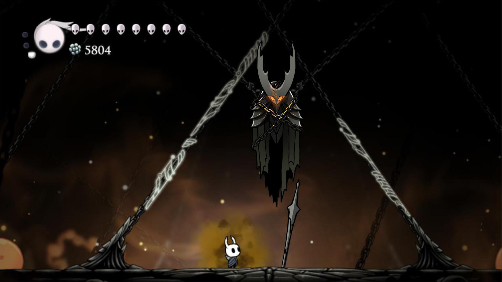
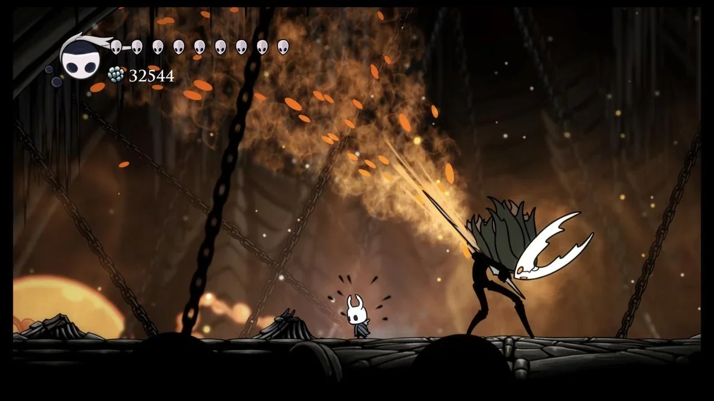

The Hollow Knight: El Sacrificio Final

El combate contra The Hollow Knight no es solo la prueba final de habilidad, sino el clímax emocional de la historia. Tras romper los sellos de los tres Soñadores, el Caballero finalmente accede a la prisión de su hermano para cumplir su destino: reemplazarlo o destruir la fuente de la plaga.
A pesar de su imponente estatura y su maestría con el aguijón, el Receptáculo está visiblemente deteriorado; su brazo izquierdo es inútil y la infección brota de sus grietas, mostrando que el sello ha fallado casi por completo.
El Descenso a la Tragedia (Fases)
A diferencia de otros jefes, esta batalla cambia drásticamente de tono a medida que avanza, pasando de un duelo épico a una escena desgarradora.
Fase 1 y 2: El Guerrero
Ataques rápidos con aguijón, embestidas y pilares de fuego naranja. Se mueve con una agilidad sorprendente a pesar de su tamaño.
Fase 3: El Quebrantamiento
El Receptáculo comienza a apuñalarse a sí mismo. Sus movimientos se vuelven torpes y empieza a lanzar globos de infección masivos.
"Un receptáculo puro no tiene emociones. Pero este... este amaba a su padre. Esa chispa de humanidad fue la que permitió que la infección se filtrara."
Habilidades de la Infección
A medida que el sello se rompe durante la pelea, el Receptáculo utiliza el poder de Destello para intentar detenernos:
- Lluvia de Infección: Se eleva y dispara múltiples ráfagas de jugo naranja desde su pecho.
- Golpe de Rebote: Salta y rebota por la arena tratando de aplastar al Caballero.
- Grito Sordo: Un rugido que libera una onda de choque, inmovilizando al jugador por un segundo.

Los Múltiples Finales
Dependiendo de si posees el amuleto Corazón del Vacío y de tu actuación cuando Hornet interviene, esta batalla puede llevarte a tres finales diferentes, incluyendo el enfrentamiento contra el verdadero enemigo: Destello.